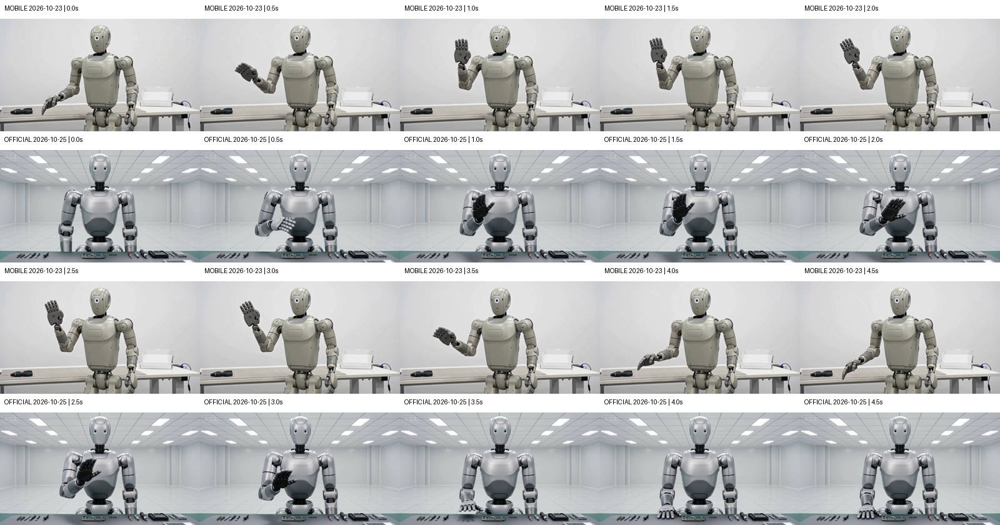
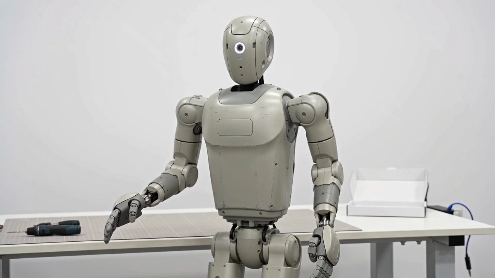

Seedance 2.0：移动供应商与官方实测对照
同一提示词 · 720p · 16:9 · 5秒 · 各1条
先看结果
两边均成功生成可解码的视频，主要的抬手、挥动和放下动作均可见。本地语音转写均识别出“测试完成，运行正常”。官方在“右手放回桌面”这一具体指令上完成得更明确；移动侧本次等待时间较短。
出片速度与时间
这里比较的是从提交到首次观察成功的等待时间。两次都生成5秒视频；下表的分钟数是等候时长，不是成片长度。
| 记录 | 移动供应商 | 即梦官方 Seedance 2.0 |
|---|---|---|
| 测试日期 | 2026-10-23 | 2026-10-25 |
| 提交时间（北京时间） | 12:48:56.851 | 15:14:16.760 |
| 首次观察成功（北京时间） | 12:51:41.544 | 15:21:08.136 |
| 提交至首次观察成功 | 164.69秒，约2分45秒 | 411.38秒，约6分51秒 |
| 成片长度 | 约5.06秒 | 约5.09秒 |
| 模型纯推理时间 | 未取得 | 未取得 |
本次移动侧少等待 246.68秒，约4分07秒；官方的观测等待时间约为移动侧的 2.50倍。这些是这两次任务的实测记录，不代表两渠道的长期平均速度。
两次测试日期、队列负载和观察方式不同，等待时间包含排队、处理和轮询延迟，无法据此说模型纯生成速度快2.50倍。移动侧接口约2.68秒就返回任务ID，这只是任务创建响应；供应商任务的创建至更新时间间隔为156秒，也无法从中拆出纯推理时间。
两条原片
移动供应商 · 10月23日
即梦官方 · 10月25日
画面与台词
| 检查项 | 移动供应商 | 官方 |
|---|---|---|
| 主要动作 | 可见抬右手、挥动、放下 | 可见抬右手、挥动、放下 |
| “放回桌面” | 4.5秒右手下垂于身体前方，未显示明确落桌 | 4.5秒右手平放桌面，完成更明确 |
| 主体与场景 | 抽帧中保持一致，未见明显切镜或额外人物 | 抽帧中保持一致，未见明显切镜或额外人物 |
| 维修台呈现 | 工作台主要在机器人身后 | 工作台在前景，工具和元件更突出 |
| 指定台词 | 本地ASR：“测试完成运行正常。” | 同一ASR：“测试完成运行正常” |
| 字幕、标识 | 抽帧未见台词字幕或类似平台角标 | 抽帧未见台词字幕；左上有“AI生成”角标 |
| 媒体文件 | 1280×720，完整解码通过 | 1280×720，完整解码通过 |
每0.5秒抽1帧，各10帧；另查看双方4.5秒的原尺寸画面。每组上排移动、下排官方：

片末4.5秒：落桌差别
移动侧：

官方：
参数与判断边界
相同提示词，文生视频，无上传参考素材。移动侧请求模型字段为doubao-seedance-2.0；官方选择“即梦 Seedance 2.0 VIP”标准版，未选择Fast或mini。共同参数为720p、16:9、5秒，每边1条；未对齐随机种子。
写实风格，5秒单镜头，固定机位，明亮的维修工作台前，一个浅灰色维修机器人面对镜头。机器人先抬起右手，缓慢挥手一次，然后将右手放回桌面。全程保持同一个机器人、同一张工作台，无切镜、无额外人物、无字幕。清晰自然的中文男声说：测试完成，运行正常。背景安静。
本轮说明两侧接入和基本交付均已跑通，并发现了具体动作执行差别。 各一条样本不能判断长期稳定性、并发能力、平均速度或整体质量差异，也不能证明供应商的真实上游权重与官方相同。另一家供应商此前测的是Seedance 2.5，不混入本轮2.0结果。
语音用同一本地Whisper large-v3-turbo转写，只核对词句，未评定人工听感、音色自然度或口型同步。抽帧检查不等于逐帧运动审查，未严格判定“只挥手一次”和所有手部接触细节。
本次官方仅追加生成1条，实扣70即梦积分；移动侧控制台显示费用5.0094，但结算币种尚未核实。两平台单位不同，不做价格倍数比较。
报告更新：2026-10-25。仅发布测试结果及生成媒体。